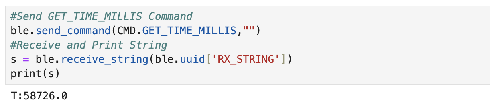
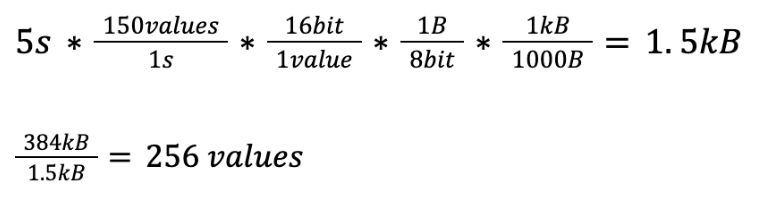

I am a student in the Department of Mechanical and Aerospace Engineering
at Cornell University. I am interested in robotics. This webpage contains all of the lab
reports for MAE 5190 Fast Robots.
Lab 1: The Artemis Board and Bluetooth
Part 1
The objective of Lab 1 was to test the connection between the Artemis board and the computer.
Arduino IDE was installed and a number of tasks were completed to show the functionality of
the Artemis board.
Prelab
During the prelab for Part 1 of the lab Arduino IDE 2.2.1 was installed onto my computer.
The instructions for
Arduino Installation
were followed to ensure proper connection between the Artemis board and the computer.
The SparkFun Apollo3 Boards package was installed using the Boards Manager in Arduino
IDE. This board package was used to run the tasks for Part 1 of Lab 1. Below is a
picture confirming that the SparkFun Apollo Board Manager was installed.
The first task involved a blinking LED on the Artemis board. A prewritten example code
was found under File->Examples->01.Basics->Blink. In the example code, a loop was
implemented and used the function digitalWrite() to turn on the LED for one second
and then turn off the LED for one second.
Below is a video showing the LED blinking on the Artemis board.
Task 3: Example04_Serial
In this example serial communication between the Artemis board and the computer were tested.
The prewritten example code found under File->Examples->Apollo3->Example04_Serial was uploaded
to the Artemis board. Below is a video showing the code being uploaded to the board and the
example outputs entered into the serial window.
Below is an image of the Serial Monitor showing the outputs: "Hello", "This is the serial example",
"Test 1", "Test 2", and "Test 3".
Below is a video showing the example being uploaded and tested.
Task 4: Example02_AnalogRead
The temperature sensor of the Artemis board was tested using the prewritten code found under
File->Examples->Apollo3->Example02_AnalogRead. I covered the sensor with my hand to increase
the temperature reading. At the beginning of the test the temperature is around 32.3 degrees
Celsius and reaches a temperature of around 33.4 degrees Celsius after being covered by my hand.
Below is a video showing the example being uploaded and the temperature reading output.
Task 5: Example01_MicrophoneOutput
The Microphone Output task tests the microphone of the Artemis board. During this task I spoke
into the microphone to change the frequency. The picture below shows some of the Serial Monitor
outputs.
The video below shows the code being uploaded and then the output of the loudest frequency in
Arduino IDE.
5000 Level Task 1: LED and Musical A4
The 5000 level task was to program the Artemis board to turn on the LED when the musical
note A is played on a speaker. When the note A4 is not being played the LED is turned
off. Below is the Arduino sketch that was used for this example. When writing the sketch
I started with the Example01_MicrophoneOutput sketch from the previous task. I added if
statements after the loudest frequency is printed. A musical note A4 is 440Hz
(UC Berkeley Reference).
The first if statement determines if the frequency is between 430Hz and 450Hz to account
for any slight error in sound quality. If the frequency is within range an “A4” statement
will be displayed in the Serial Monitor and the LED on the Artemis board will turn on.
The second if statement determines if the frequency is lower than 430Hz or greater than
450Hz. If the frequency is lower than 430Hz or greater than 450Hz a “Not A4” statement
will be displayed in the Serial Monitor and the LED on the Artemis board will turn off.
Below is an image of the altered lines in the sketch. I added the if statements in lines
113 to 122.
Below is an image of the outputs in the serial monitor for bothe "Not A4" frequencies
and "A4" frequencies.
Here is a video showing the LED turning on and off when the note A4 is played.
Musical Tuner
I added to the LED and Musical A4 task by creating a musical tuner. The LED on the Artemis
turns on when the musical note A4 is played and is off when A4 is not played. There are
eleven total if statements that determine the note being played:
A4 : 440Hz (range between 430Hz and 450Hz)
B4 Flat : 466Hz (range between 456Hz and 476Hz)
B4 : 494Hz (range between 484Hz and 504Hz)
C5 : 523Hz (range between 513Hz and 533Hz)
C5 Sharp : 554Hz (range between 544Hz and 564Hz)
D5 : 587Hz (range between 577Hz and 597Hz)
D5 Sharp : 622Hz (range between 612Hz and 632Hz)
E5 : 659Hz (range between 649Hz and 669Hz)
F5 : 698Hz (range between 688Hz and 708Hz)
F5 Sharp : 740Hz (range between 730Hz and 750Hz)
G5 : 784Hz (range between 774Hz and 794Hz)
Below is an image of the additional lines of code. The additional lines of code include
lines 113 to 168.
Here is a video of various notes being played and the corresponding outputs in the
Serial Monitor.
Part 1 of the lab involved testing the connection between the Artemis board and the computer.
Various tasks were performed including turning on and off an LED on the Artemis board,
printing outputs in the serial monitor, viewing temperature data in the serial monitor,
testing the microphone, and creating a musical tuner using the LED and microphone functions
of the Artemis board.
Part 2
The objective of Part 2 of the lab was to ensure that Bluetooth communication between the
computer and the Artemis board was working correctly. Python in a Jupyter Notebook was used
for the computer and Arduino IDE was used for the Artemis board.
Prelab: Setup
During the setup for the lab I already had installed Python 3. I needed to install pip by
running the line "python3 -m pip install --user virtualenv" in the Command Line Interface
(CLI). I created a folder called “MAE 5190 Lab” where I put all of the Jupyter Notebook files.
I then created a virtual environment by typing "python3 -m venv FastRobots_ble" in the CLI.
The virtual environment was activated by typing "source FastRobots_ble/bin/activate" and then
deactivated by typing "deactivate".
The python packages were installed by entering "pip install numpy pyyaml colorama nest_asyncio
bleak jupyterlab" into the CLI.
The below pictures show the commands entered into the CLI.
In addition to the above inatallations I also needed to intall matplotlib to use for the 5000
level tasks. I asked a TA for help for the installation. Below is a picture of the command
entered into the CLI.
To import modules into the Jupyter Notebook the following lines of code were run.
After uploading the provided ble_ardunio.ino file to the Artemis board the MAC address was
printed in the serial monitor. The MAC address is c0:83:34:6a:b2:3c The image below shows
the Arduino serial monitor with the printed MAC address.
Prelab: Codebase
The next steps of the prelab involved installing the provided codebase into the project
directory and copying the provided “ble_python” directory from the lab instructions into the
project directory. After successfully uploading to the directory the Jupyter Notebook was
opened by entering “jupyter lab” into the CLI. The image below shows the entered command in
the CLI.
To set up bluetooth communication, the MAC address needed to be changed in the Jupyter
Notebook connection.yaml file to match the advertised MAC address from the Artemis board.
Then unique UUID addresses needed to be used in the connection.yaml file and Arduino IDE
because some devices in the lab may have the same MAC address. Using UUIDs ensures that
the computer is receiving data from the correct Artemis board. The UUIDs were generated in
the Jupyter Notebook demo.ipynb file and then entered into the connection.yaml and
ble_arduino.ino files. Below is a picture of the lines of code used in the demo.ipynb file
to generate the UUIDs.
The UUIDs were entered into the ble_arduino.ino file as seen below.
The UUIDs were entered into the connection.yaml file as seen below.
To connect to the Artemis the following lines are run in the Jupyter Notebook.
In addition to establishing the bluetooth connection, several command types needed to be
defined. These command types were used to complete the tasks outlined in the next section.
Here is an image of the command types defined in Arduino IDE.
Here is an image of the command types defined in Jupyter Notebook.
Lab Tasks
Task 1: ECHO Command
The first task of Part 2 was to send an ECHO command of a string value to the Artemis
board and receive an augmented string on the host computer. This task tested the
communication between the Artemis board and the computer. In order to successfully
run this command the line ECHO = 3 needed to be added to the Jupyter Notebook file
cmd_types.py and the statement ECHO needed to be added to the Arduino IDE
ble_arduino.ino file in the section enum CommandTypes.
The image below shows the Arduino IDE code for case ECHO.
The image below shows the Jupyter Notebook code to send the ECHO command and receive
the augmented string from the Artemis board.
Task 2: GET_TIME_MILLIS
The next task adds another command to the Jupyter Notebook for the Artemis board to
reply with a string of the current time. In order to successfully run this command
the line GET_TIME_MILLIS = 6 needed to be added to the Jupyter Notebook file
cmd_types.py and the statement GET_TIME_MILLIS needed to be added to the Arduino
IDE ble_arduino.ino file in the section enum CommandTypes.
The image below shows the Arduino IDE code for case GET_TIME_MILLIS.
The image below shows the Jupyter Notebook code to send the GET_TIME_MILLIS
command and receive the string with the current time.

Task 3: Notification Handler
A notification handler was created in the Python Jupyter Notebook to receive a
string value from the Artemis board. The GET_TIME_MILLIS command was used to
get the time after starting the notification handler.
The image below is the notification handler and the GET_TIME_MILLIS command in
the Jupyter Notebook.
Task 4: Current Time Loop
A loop was implemented to get the current time in milliseconds from the artemis
board and send the information to the computer. The time information is received
and processed by the notification handler. In order to successfully run this command
the line GET_TIME_MILLIS_LOOP = 7 needed to be added to the Jupyter Notebook file
cmd_types.py and the statement GET_TIME_MILLIS_LOOP needed to be added to the Arduino
IDE ble_arduino.ino file in the section enum CommandTypes.
To find the data transfer rate the length of the data was computed by assembling the
individual outputs into an array in the Jupyter Notebook. The number of strings in
each element of the array is 9, and the number of elements in the array is 748. The
time difference of the final (40.428s) and starting time (35.434s) was found to be
4.994 seconds. The data transfer rate is
(748*9)bytes/4.994seconds = 1348.018 bytes/second
The image below shows the Arduino IDE code for case GET_TIME_MILLIS_LOOP.
The image below shows the Jupyter Notebook command and some of the time outputs.
The following statements in Jupyter Notebook printed the timeSarray and the length
of the array that was used to compute the data transfer rate.
The video below shows a scroll log of all of the time outputs.
Task 5: SEND_TIME_DATA
A globally defined array to store time stamps was implemented. Inside of the for loop
each time stamp is put inside of the “timearray”. The data is then sent as an array
to the computer using Jupyter Notebook. In order to successfully run this command the
line SEND_TIME_DATA = 8 needed to be added to the Jupyter Notebook file cmd_types.py
and the statement SEND_TIME_DATA needed to be added to the Arduino IDE ble_arduino.ino
file in the section enum CommandTypes.
To find the data transfer rate the length of the data was computed by assembling the
individual outputs into an array in the Jupyter Notebook. The number of strings in
each element of the array is 9, and the number of elements in the array is 2748.
The time difference of the final (49.730s) and starting time (49.685s) was found to
be 0.045 seconds. The data transfer rate is
(2748*9)bytes/0.045seconds = 549600 bytes/second
The image below shows the Arduino IDE code for case SEND_TIME_DATA.
The image below shows the Jupyter Notebook command and some of the time outputs
in the array.
The following statements in Jupyter Notebook printed the timeSarray and the length
of the array that was used to compute the data transfer rate.
The video below shows a scroll log of all of the times in the array.
Task 6: GET_TEMP_READINGS
In this task, a second array was added to store temperature readings from the Artemis
board. The temperature array is the same size as the time array. The time and
temperature readings were taken at the same time. The data is sent as an array to
the computer using Jupyter Notebook. In order to successfully run this command the
line GET_TEMP_READINGS = 9 needed to be added to the Jupyter Notebook file cmd_types.py
and the statement GET_TEMP_READINGS needed to be added to the Arduino IDE ble_arduino.ino
file in the section enum CommandTypes.
The image below shows the Arduino IDE code for case GET_TEMP_READINGS.
The image below shows the Jupyter Notebook command and some of the time and temperature
outputs in the array.
The video below shows a scroll log of all of the times and temperatures in the array.
Task 7: Discussion
The method used in Task 4 involved sending the current time from the Artemis board to
the computer. Each time was sent as an individual piece of data. The method used in
Task 5 involved creating an array of times that was stored on the memory of the
Artemis board and then sent to the computer to display the collected data.
The data transfer rate of the array method used in Task 5 (549600 bytes/second) is
faster than the data transfer rate when sending individual pieces of data in Task 4
(1348.018 bytes/second).
An advantage of sending data individually as in Task 4 is that less memory on the
Artemis board is being used, but the disadvantage is a slower data transfer rate.
An advantage of sending data as an array as in Task 5 is that there is a faster data
transfer rate, but a disadvantage is that more memory is being used on the Artemis
to store the array.
The Artemis board has a maximum storage of 384 kB of RAM. If 16 bit values at 150 Hz
were sampled every 5 seconds, 256 values would be stored before running out of memory
on the Artemis board. The calculations can be found below.

5000 Level Task 1: Effective Data Rate And Overhead
5000 Level Task 2: Reliability
Discussion: Part 2
Lab 1 References
Thank you to all of the TAs that answered any questions I had. I referenced the past lab
reports of Liam Kain, Rafael Gottlieb, Larry Lu, Julian Prieto, and Ignacio Romo.